In this article I will do a deep dive on GNNs, edge convolution, and custom loss functions for clustering point clouds. In the end I'll show how GNNs could be used for a new detector at CERN, but the techniques are useful for a ton of applications.
The AI challenge: Particle reconstruction at CERN
Before I dive into graph neural networks (GNNs), I want to quickly explain the problem I'm trying to solve. If you don't care about CERN and particles, and only want to read about GNNs, feel free to scroll to the next section, this section is really only for context. If you do care about the physics, here is the paper on it - the text here will be more accessible though.
Within the CMS detector, folks at CERN are developing the 'High Granularity Calorimeter' (HGCAL), a new ultra precise particle detector that's supposed to last until about 2041 (the foreseen end of the HiLumi-LHC program). I don't want to go into detector physics too much, but it's an ambitious machine to say the least – in several ways it relies on R&D that isn't there yet.
The whole CMS detector consists of a bunch of different subdetectors, but whenever I write 'detector' here, I mean HGCAL. Here's how it's supposed to work: Two protons collide in the middle of the CMS detector. A bunch of particles are created, and a lot of them will fly through the detector.
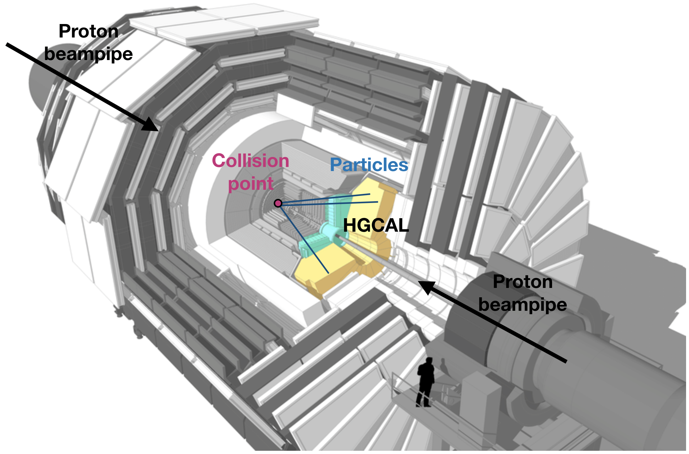
Adapted from here. Lines and text added by me, and should be considered highly approximate.
The detector is composed of a lot of little silicon hexagon-shaped chips. While the particle is traversing the detector, it 'hits' these silicon chips:
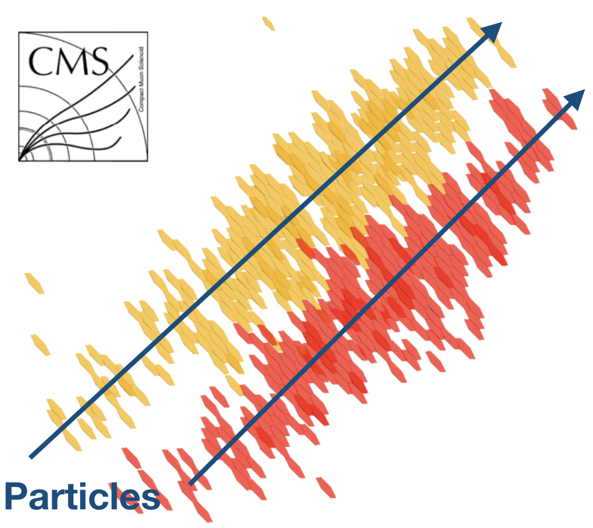
Adapted from here.
Every time a particle hits a chip, five things are saved: The x, y and z coordinates of the chip, some deposited energy, and a timestamp. This basic 5D data point is called a 'hit'. All that our detector really does is measure a long list of hits, or in another words, an array with shape (N_hits x 5).
At the LHC, we don't just collide a single pair of protons. Instead, we collide a bunch of protons into another bunch of protons – in fact, we may end up with about 200 simultaneous proton-proton collisions, all of them spraying particles into our detector. The resulting cloud of hits is quite formidable:
Click on the plot for the 3D image. Zoom in to really get a good picture of the number of hits in the point cloud. BTW, this is not a real proton-proton collision, but it's close enough.
The central challenge is: Take this point cloud (remember, essentially just a an array with shape (N_hits x 5)), and turn it back into a list of particles. Or more visually, the challenge is grouping hits together in a single object:
This task of grouping hits is called reconstruction, because you're basically trying to 'reconstruct' a particle from a bunch of hits. An algorithm that does all the grouping is called a reconstruction algorithm.
This is a simulated example of a single proton-proton-bunch collision, also called an event. In real life, the LHC is expected to produce one of these monstrously large point clouds every 25 nanoseconds. Although a large number of point clouds are thrown out (there is a fast filter called a trigger), it's still quite important that whatever algorithm we come up with is kind of fast.
Graph neural networks (GNNs)
Writing an algorithm that finds objects in a cloud this is pretty complicated. The number of hits in the cloud is variable, the number of particles-to-be-reconstructed is highly variable, and worst of all, there is a high degree of overlap between groups of hits, which is pretty hard to disentangle. People are building the detector as I write this, but so far nobody has been able to come up with an actually working algorithm to process the data that the detector will spit out.
'Classical' algorithms (ones that don't use machine learning) have some limitations, but above all, people are afraid they're simply not going to be fast enough. Naturally, some clever physicists started looking for a machine-learning based solution. And naturally, they quickly landed on EdgeConv. EdgeConv, short for edge convolution, is a dynamic graph convolutional neural network. It was a pretty revolutionary invention back in 2018 when it was first published, and we used many of its ideas for our attempt at solving the AI challenge of our detector. Because graph neural networks are central to the whole reconstruction task, I'd like to dive a little deeper into them.
In order to explain how GNNs work, let's first do a slightly less complicated task: Recognizing shapes in point clouds.
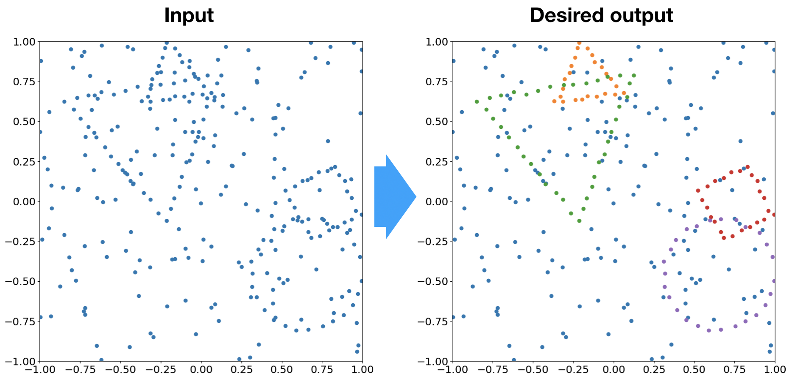
On the left, you see 291 points in two dimensions, in which there are four shapes hidden: two triangles, a square, and a circle. Imagine that we need to create an algorithm that finds and labels all the points that belong to a shape. The rest of the points are noise.
This is a nice example problem because it's pretty easy for a human to do, but quite hard to write a good algorithm for. The shapes don't consist of completely straight lines, the number of points per shape can differ, and the angle of the shape is also random. There is significant overlap between shapes and other shapes, and between shapes and noise points, further complicating the task.
Think about how hard it would be to write a classical algorithm for this problem, even though the problem definition and input data is quite straightforward.
We're going to try and tackle this problem with a graph neural network. I assume some prior knowledge of simple machine learning models, like an MLP, but no prior knowledge of GNNs.
Some formalism
Let's define X to be the coordinates:
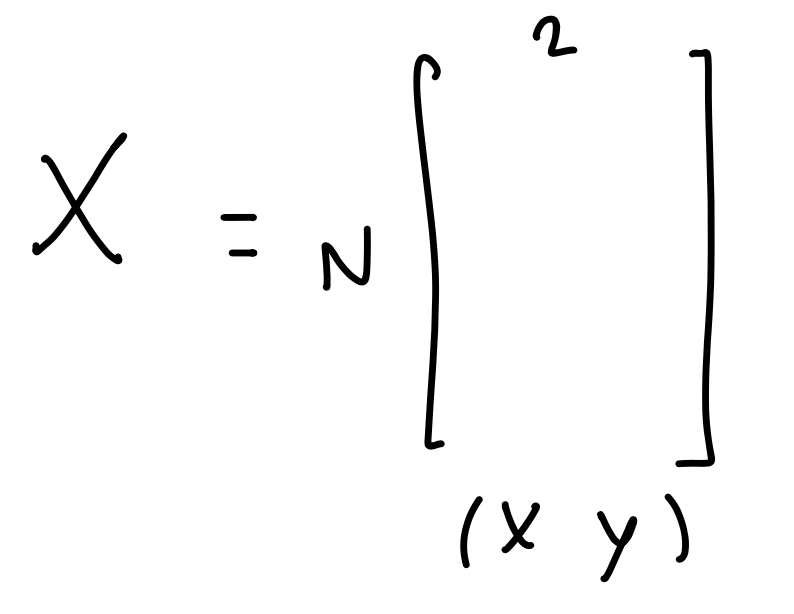
With this notation I mean X has N rows and 2 columns, so it's an (N, 2) matrix, and the first column represents the x-coordinate and the second column represents the y-coordinate. This will be our input to the model.
In the rest of this section, I want to just go step by step through the separate parts of the GNN.
In other words, the rest of the section describes all the parts you would encounter if you were to call model.forward(X) on the input matrix in a PyTorch model of the GNN.
As usual in machine learning, the first thing we want to do is map these input coordinates to higher dimensional latent space, which allows the network to encode more information:
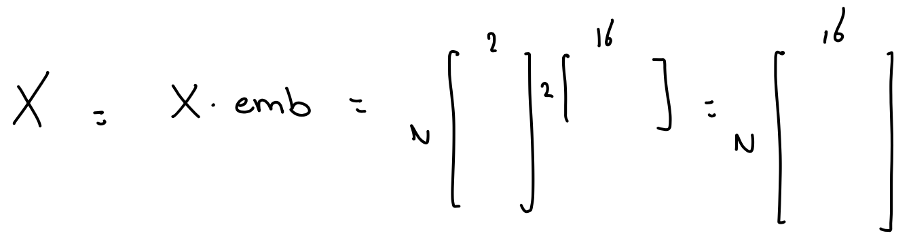
This is a single matrix multiplication with the matrix emb (or a single dense layer) to do the conversion to the latent space. I am just going to redefine X to be the latent space coordinates, since this is what were going to use for the rest of the network. The distinction is just one matrix multiplication anyway.
So now we have N points in a 16-dimensional space, but it's not exactly a graph yet. In order for this thing to be a graph, we need edges, connections between points. A straightforward way to generate edges is to say: "For every point, create an edge with its closest 8 neighbors". This is called the k-nearest neighbors algorithm (kNN) with k=8.
Clearly which points end up as neighbors depend on the weights in the emb matrix, but typically it's not too far off from the edges you would get if you were to just use the two-dimensional input space. Here is a plot of the edges you might get:
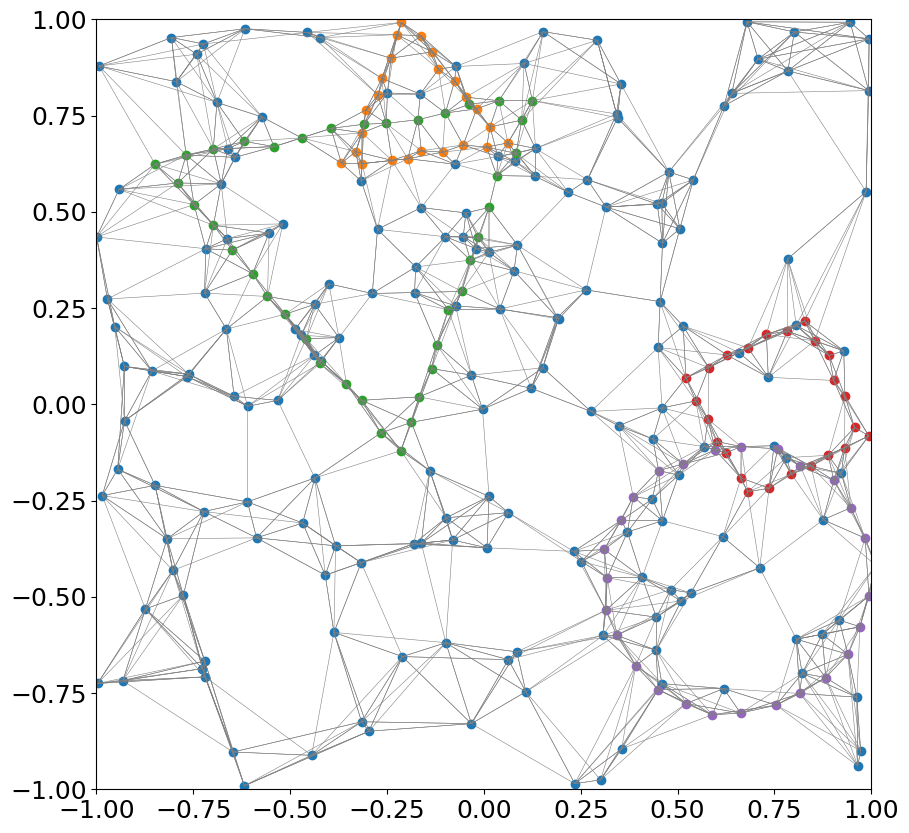
In matrix form, you could write it as:
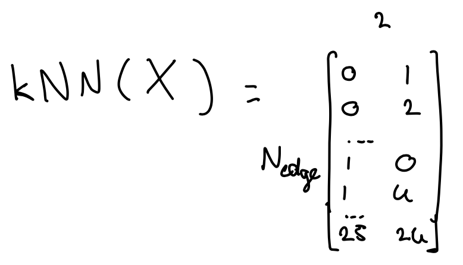
meaning if apply the function kNN(X), you get an (N_edge,2) matrix that says "point 0 is connected to point 1, point 0 is connected to point 2, etc.".
In total there are N_edge edges (there are much more edges than nodes), so the matrix E has N_edge rows.
At this point, it's worth using some more common graph terminology: when used in a graph, points are often called nodes, and the 16 latent space dimensions we created at the beginning of this section are called the node features. So to recap: Every point is a node, every node is connected to other nodes via edges, and every node has 16 node features (which are the latent space coordinates).
Let's take this matrix, and fill in the actual points instead of just "point 0" or "point 1". We'll call the result the 'edge matrix' E:
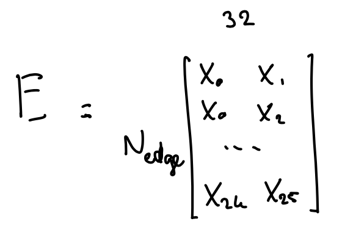
So the first row of E has 32 dimensions: The first 16 values are node features of the 0th node in X, and the next 16 values are node features of the 1st node. In the second row, the first 16 values are node features of node 0 and the next 16 values are the node features of node 2. It's just the matrix from above, but now with the actual node values filled in instead of just the node index.
Edge convolution and message passing
Now here comes the cool part, the reason why graph neural networks are so powerful. In most explanations of 'edge convolution' I found online, the first step is to give the reader a high-level overview of what the intended goal is. The famous cartoon from the EdgeConv paper is this one:
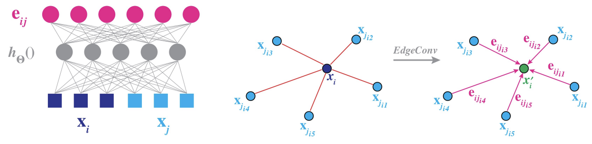
Taken from the EdgeConv paper
The overarching idea is to update node features based on the edge features, and the edge features are a function of the initial node features. This operation is called edge convolution, and if done a few times consecutively information can flow through the graph through the edges. That property of information flow is called message passing.
To be honest, initially this high-level view didn't really help me grasp what was actually happening, and I was kind of confused about these elusive 'edge convolution' and 'message passing' terms for a while.
Here I would like to take an alternative approach: I'm just going to describe the actual steps of edge convolution the way you could implement them in a model, and then once we're done you'll hopefully see why 'edge convolution' is a good name.
First, let's take the edge matrix E above, and pass it through an MLP, called H (in line with the symbols used in the EdgeConv paper). For simplicity, let's just give our MLP H one layer, so we can keep writing everything in terms of matrix multiplications:
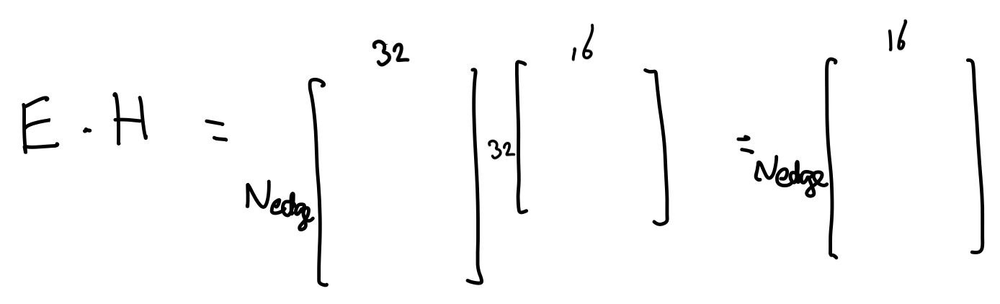
Apply an activation function on it too, usually ReLU nowadays, and call the result E':
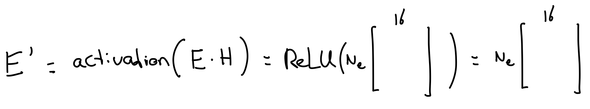
(using Ne now instead of N_edge). E' has Ne rows and 16 columns now. Every row The number 16 I chose myself, but of course it's no accident that it's the same number as the number of dimensions in the latent space from the previous section. We'll get there in a bit.
The next operation is a little tricky to explain. We're going to aggregate all the edges in E' per node. Let's say we have a part of the graph that looks like this:
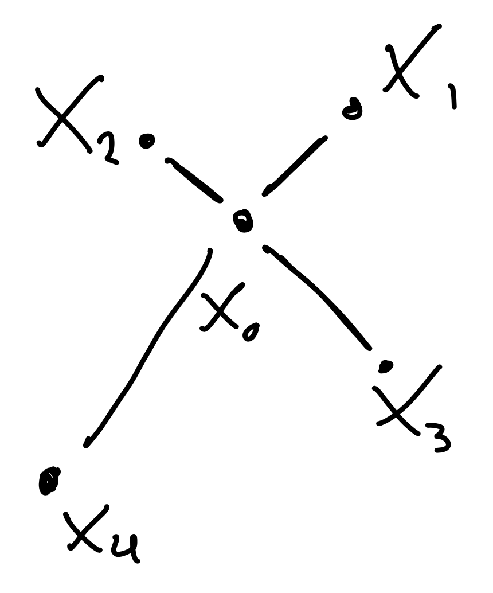
We select all the rows in E' that belong to the edges 0-1, 0-2, 0-3, and 0-4, and we take the mean (you could use a different aggregator, like a max or min, but let's stick with mean now):
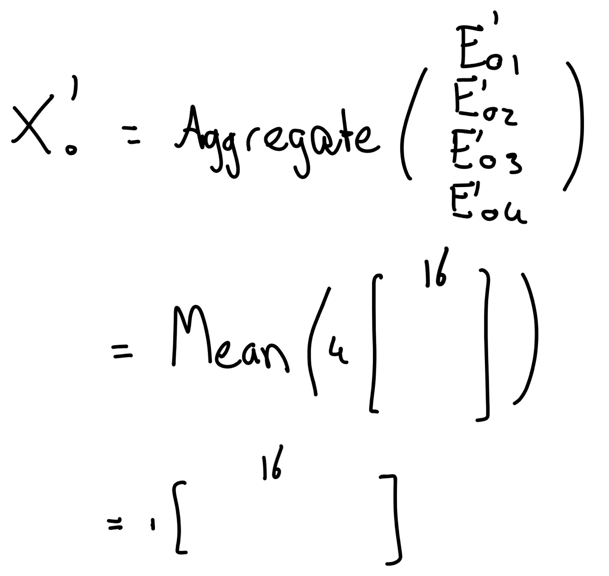
We then end up with a single row with 16 columns, and I already took the liberty of calling it X0'. X0' is going to be the updated vector of the original node feature vector X0.
This is just for node 0, but you can easily imagine doing this operation for all nodes:
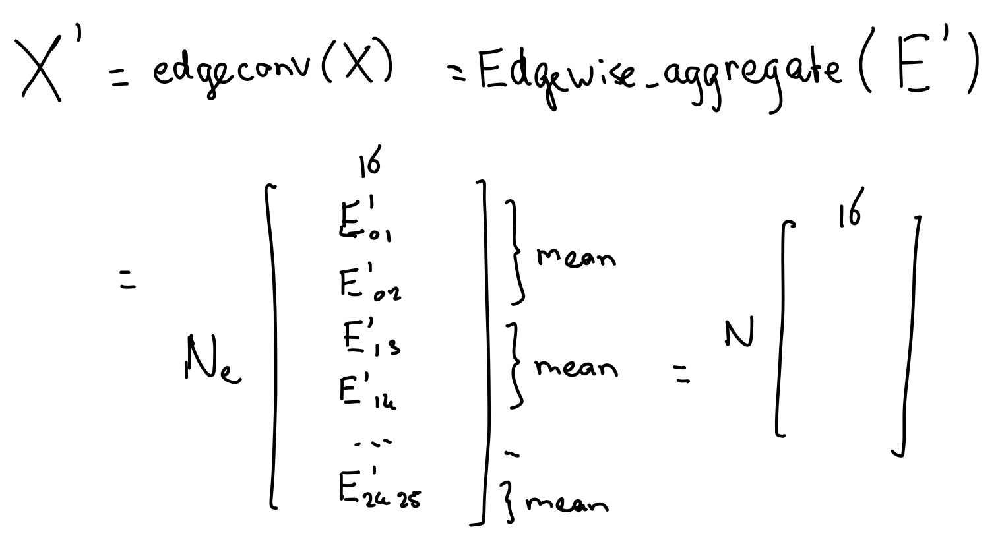
Note how, by taking means over edges, we go from an (N_edge, 16) matrix to a (N, 16) (where N, remember, is the number of nodes). The result is X', a (N, 16) matrix, i.e. the same shape as X, but now with updated values. This is EdgeConv, in a basic form.
Let's summarize what we did so far. We took the initial node values X (X0, X1, ...), generated edges with the kNN algorithm, and constructed an edge matrix E. We then applied an MLP H on E to get E', and then aggregated over edges to get the update node features X'.
Now let's revisit the initial graphic from the EdgeConv paper:
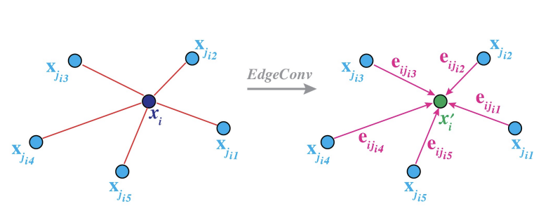
The notation is slightly different, but hopefully this graphic makes sense now: You start with initial node values, build edges, aggregate edges, and get an updated node.
Convolution in the context of machine learning often means a sliding window. For example, in Convolutional Neural Nets, you typically try to learn the weights of a window that slides along the input image. You could say the following, and hopefully I'm not oversimplifying here:
EdgeConv is just a sliding window convolution, where the sliding window consists of the neighboring nodes.
The 'window' here is just a little bit more abstract (for example the window size, i.e. the number of neighbors, differs per node), but in principle EdgeConv is using a very similar idea as the one from CNN's.
Finally, before I close off this section, we still have to cover that bit about message passing. In most models using EdgeConv, you would apply the operation repeatedly:
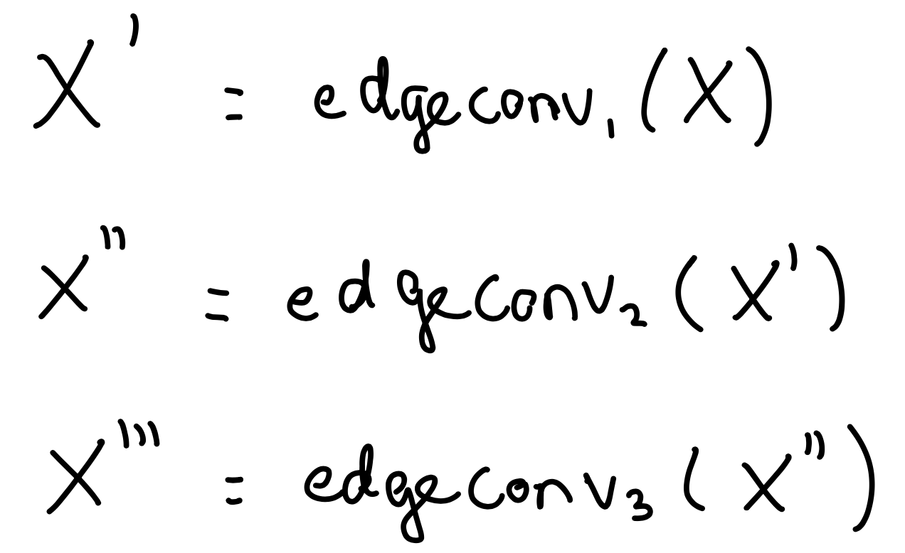
Imagine that a part of the graph looks like this:
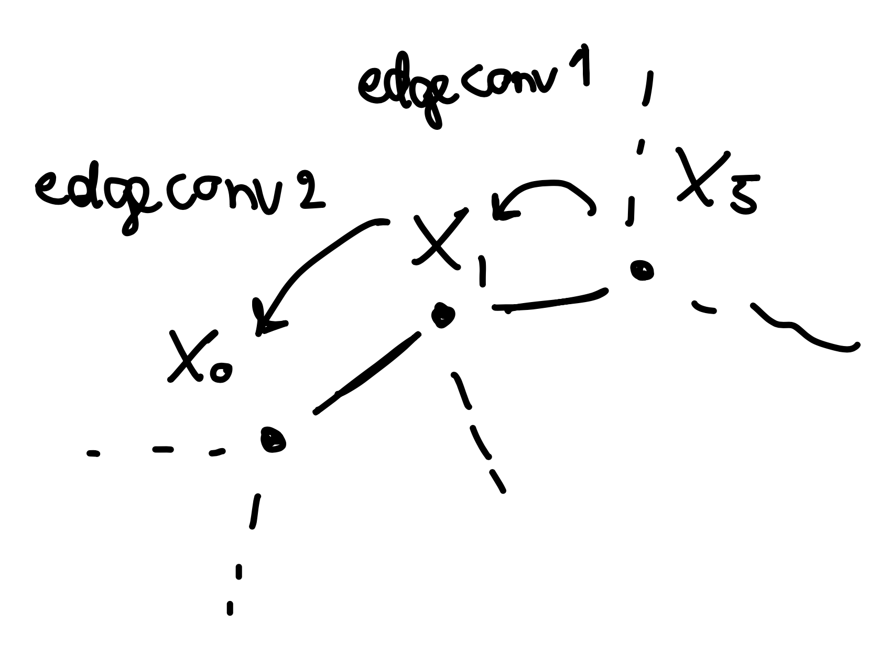
In this little example, the first updated value X0' is completely independent of whatever is in X5, because there is no edge between node 0 and node 5. However, X1' is influenced by X5. The second update X0'' is influenced by X1', and thus indirectly by X5. Hopefully this illustrates how information from further away in the graph can propagate, by repeatedly applying the edge convolution. That's an example of message passing, of messages being passed node-by-node by repeatedly applying the edge convolution operation.
The model
With all of the formalism and explanations of edge convolution out of the way, the actual model isn't all that complicated:
class ShapeGNN(nn.Module):
"""
Model to recognize basic shapes in N-dimensional point clouds.
A model based on a standard subclass of a PyTorch module that
uses consecutive EdgeConv layers (from the PyTorch Geometric
package) in order to learn what basic shapes in a point cloud
look like.
Attributes
----------
input_dim : int
Number of columns of the input data.
output_dim : int
Number of columns of the output matrix.
hidden_dim : int
Dimension of the hidden (latent) space.
k : int
Number of neighbors to generate edges with when running
the k-nearest neighbors algorithm.
n_edgeconvs : int
Number of consecutive EdgeConv layers of which the model
should consist.
"""
def __init__(self, input_dim: int, output_dim: int=3, hidden_dim: int=16,
k: int=16, n_edgeconvs: int=4):
super().__init__()
self.input_dim = input_dim
self.output_dim = output_dim
self.hidden_dim = hidden_dim
self.n_edgeconvs = n_edgeconvs
self.k = k
self.embedding = nn.Sequential(nn.Linear(input_dim, hidden_dim), nn.ReLU())
self.edgeconvs = nn.ModuleList()
for _ in range(n_edgeconvs):
self.edgeconvs.append(
torch_geometric.nn.conv.EdgeConv(
nn=nn.Sequential(
nn.Linear(2*hidden_dim, hidden_dim),
nn.ReLU(),
nn.Linear(hidden_dim, hidden_dim),
),
aggr='mean'
)
)
self.output = nn.Linear(n_edgeconvs*hidden_dim, output_dim)
def forward(self, data: torch_geometric.data.Data) -> torch.FloatTensor:
x = data.x
x = self.embedding(x)
intermediate_outputs = []
for edgeconv in self.edgeconvs:
edge_index = knn_graph(x, k=self.k, batch=data.batch)
x = edgeconv(x, edge_index=edge_index)
intermediate_outputs.append(x)
x = torch.cat(intermediate_outputs, dim=-1)
x = self.output(x)
return x
The torch_geometic.nn.conv.EdgeConv does most of the heavy lifting for you, all you need to supply it is a little MLP that transforms an edge.
As you can see I added a little extra (hidden_dim x hidden_dim) matrix to increase the number of trainable weights of the model.
The edges you regenerate after every EdgeConv layer. This is what the word 'dynamic' refers to in the title of the EdgeConv paper.
The loss function
WIP.